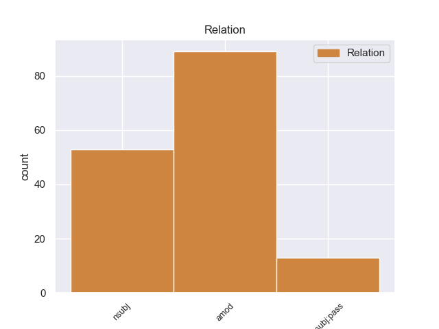
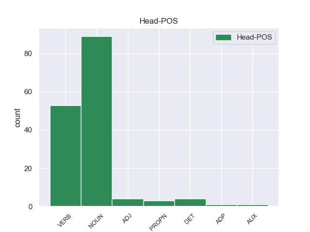
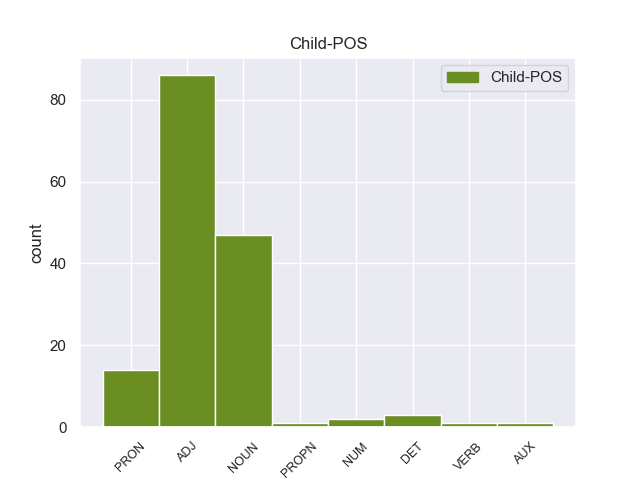

Distribution of features within this leaf



Agreement Rules sorted by frequency.
- When the dependent token is the adjectival modifier(amod) of the head token,
1 Σύμφωνα _ _ _ _ 0 _ _ _
2 με _ _ _ _ 0 _ _ _
3 τον _ _ _ _ 0 _ _ _
4 αμερικανικό αμερικανικός NOUN _ Case=Acc|Gender=Fem|Number=Sing 6 amod _ _
5 οργανισμό _ _ _ _ 0 _ _ _
6 Heritage ο AUX _ Case=Nom|Gender=Masc|Number=Sing 0 _ _ _
7 Foundation _ _ _ _ 0 _ _ _
8 : _ _ _ _ 0 _ _ _
1 Όταν _ _ _ _ 0 _ _ _
2 η _ _ _ _ 0 _ _ _
3 Γερμανία ο DET _ Case=Acc|Definite=Def|Gender=Fem|Number=Sing|PronType=Art 4 nsubj _ _
4 υπέγραψε υπέγραψες NOUN _ Case=Acc|Gender=Fem|Number=Sing 0 _ _ _
5 ανακωχή _ _ _ _ 0 _ _ _
6 , _ _ _ _ 0 _ _ _
7 συνήλθε _ _ _ _ 0 _ _ _
8 σ _ _ _ _ 0 _ _ _
9 το _ _ _ _ 0 _ _ _
10 Παρίσι _ _ _ _ 0 _ _ _
11 η _ _ _ _ 0 _ _ _
12 συνδιάσκεψη _ _ _ _ 0 _ _ _
13 της _ _ _ _ 0 _ _ _
14 ειρήνης _ _ _ _ 0 _ _ _
15 , _ _ _ _ 0 _ _ _
16 όπου _ _ _ _ 0 _ _ _
17 ο _ _ _ _ 0 _ _ _
18 Βενιζέλος _ _ _ _ 0 _ _ _
19 παρέστη _ _ _ _ 0 _ _ _
20 ως _ _ _ _ 0 _ _ _
21 αντιπρόσωπος _ _ _ _ 0 _ _ _
22 της _ _ _ _ 0 _ _ _
23 Ελλάδας _ _ _ _ 0 _ _ _
24 και _ _ _ _ 0 _ _ _
25 πρόβαλε _ _ _ _ 0 _ _ _
26 τις _ _ _ _ 0 _ _ _
27 αξιώσεις _ _ _ _ 0 _ _ _
28 της _ _ _ _ 0 _ _ _
29 χώρας _ _ _ _ 0 _ _ _
30 μας _ _ _ _ 0 _ _ _
31 , _ _ _ _ 0 _ _ _
32 οι _ _ _ _ 0 _ _ _
33 οποίες _ _ _ _ 0 _ _ _
34 έγιναν _ _ _ _ 0 _ _ _
35 σ _ _ _ _ 0 _ _ _
36 το _ _ _ _ 0 _ _ _
37 σύνολό _ _ _ _ 0 _ _ _
38 τους _ _ _ _ 0 _ _ _
39 δεκτές _ _ _ _ 0 _ _ _
40 με _ _ _ _ 0 _ _ _
41 τις _ _ _ _ 0 _ _ _
42 συνθήκες _ _ _ _ 0 _ _ _
43 του _ _ _ _ 0 _ _ _
44 Νεϊγύ _ _ _ _ 0 _ _ _
45 ( _ _ _ _ 0 _ _ _
46 27_Νοεμβρίου_1919 _ _ _ _ 0 _ _ _
47 ) _ _ _ _ 0 _ _ _
48 και _ _ _ _ 0 _ _ _
49 των _ _ _ _ 0 _ _ _
50 Σεβρών _ _ _ _ 0 _ _ _
51 ( _ _ _ _ 0 _ _ _
52 10_Αυγούστου_1920 _ _ _ _ 0 _ _ _
53 ) _ _ _ _ 0 _ _ _
54 . _ _ _ _ 0 _ _ _
1 Τους _ _ _ _ 0 _ _ _
2 έγραφε _ _ _ _ 0 _ _ _
3 ότι _ _ _ _ 0 _ _ _
4 οι _ _ _ _ 0 _ _ _
5 επαναστάτες _ _ _ _ 0 _ _ _
6 θα _ _ _ _ 0 _ _ _
7 κρατούσαν _ _ _ _ 0 _ _ _
8 τις _ _ _ _ 0 _ _ _
9 θέσεις _ _ _ _ 0 _ _ _
10 τους _ _ _ _ 0 _ _ _
11 μέχρι _ _ _ _ 0 _ _ _
12 να _ _ _ _ 0 _ _ _
13 σκοτωθεί σκοτώνω VERB VERB Aspect=Perf|Mood=Ind|Number=Sing|Person=3|VerbForm=Fin|Voice=Pass 0 _ _ _
14 κι _ _ _ _ 0 _ _ _
15 ο _ _ _ _ 0 _ _ _
16 τελευταίος τελευταίος ADJ ADJ Case=Nom|Gender=Masc|Number=Sing 13 nsubj:pass _ _
17 από _ _ _ _ 0 _ _ _
18 τις _ _ _ _ 0 _ _ _
19 οβίδες _ _ _ _ 0 _ _ _
20 των _ _ _ _ 0 _ _ _
21 ευρωπαϊκών _ _ _ _ 0 _ _ _
22 πολεμικών _ _ _ _ 0 _ _ _
23 προκειμένου _ _ _ _ 0 _ _ _
24 να _ _ _ _ 0 _ _ _
25 μην _ _ _ _ 0 _ _ _
26 αφήσουν _ _ _ _ 0 _ _ _
27 τους _ _ _ _ 0 _ _ _
28 Τούρκους _ _ _ _ 0 _ _ _
29 να _ _ _ _ 0 _ _ _
30 πάρουν _ _ _ _ 0 _ _ _
31 το _ _ _ _ 0 _ _ _
32 Ακρωτήρι _ _ _ _ 0 _ _ _
33 . _ _ _ _ 0 _ _ _
Disagree Examples:
1 Ας _ _ _ _ 0 _ _ _
2 ποντάρουμε _ _ _ _ 0 _ _ _
3 λοιπόν _ _ _ _ 0 _ _ _
4 σ _ _ _ _ 0 _ _ _
5 την _ _ _ _ 0 _ _ _
6 ικανότητά _ _ _ _ 0 _ _ _
7 της _ _ _ _ 0 _ _ _
8 να _ _ _ _ 0 _ _ _
9 επιφέρει _ _ _ _ 0 _ _ _
10 περαιτέρω _ _ _ _ 0 _ _ _
11 κινητοποιήσεις κινητοποίηση NOUN NOUN Case=Acc|Gender=Fem|Number=Plur 0 _ _ _
12 σ _ _ _ _ 0 _ _ _
13 την _ _ _ _ 0 _ _ _
14 εαρινή εαρινός ADJ ADJ Case=Acc|Gender=Fem|Number=Sing 11 amod _ _
15 Σύνοδο _ _ _ _ 0 _ _ _
16 Κορυφής _ _ _ _ 0 _ _ _
17 της _ _ _ _ 0 _ _ _
18 Βαρκελώνης _ _ _ _ 0 _ _ _
19 ! _ _ _ _ 0 _ _ _
1 Ο _ _ _ _ 0 _ _ _
2 αμερικανός _ _ _ _ 0 _ _ _
3 Υπουργός _ _ _ _ 0 _ _ _
4 Οικονομικών _ _ _ _ 0 _ _ _
5 , _ _ _ _ 0 _ _ _
6 Τζακ _ _ _ _ 0 _ _ _
7 Λιου _ _ _ _ 0 _ _ _
8 , _ _ _ _ 0 _ _ _
9 δήλωσε _ _ _ _ 0 _ _ _
10 ότι _ _ _ _ 0 _ _ _
11 οι _ _ _ _ 0 _ _ _
12 οικονομικές _ _ _ _ 0 _ _ _
13 κυρώσεις κύρωση NOUN NOUN Case=Nom|Gender=Fem|Number=Plur 21 nsubj _ _
14 σε _ _ _ _ 0 _ _ _
15 βάρος _ _ _ _ 0 _ _ _
16 της _ _ _ _ 0 _ _ _
17 Μόσχας _ _ _ _ 0 _ _ _
18 έχουν _ _ _ _ 0 _ _ _
19 ήδη _ _ _ _ 0 _ _ _
20 " _ _ _ _ 0 _ _ _
21 πλήξει πλήττω VERB VERB Aspect=Perf|Mood=Ind|Number=Sing|Person=3|VerbForm=Fin|Voice=Act 0 _ _ _
22 σημαντικά _ _ _ _ 0 _ _ _
23 " _ _ _ _ 0 _ _ _
24 τη _ _ _ _ 0 _ _ _
25 ρωσική _ _ _ _ 0 _ _ _
26 οικονομία _ _ _ _ 0 _ _ _
27 . _ _ _ _ 0 _ _ _
1 Ωστόσο _ _ _ _ 0 _ _ _
2 , _ _ _ _ 0 _ _ _
3 η _ _ _ _ 0 _ _ _
4 Αντιπολίτευση αντιπολίτευση NOUN NOUN Case=Nom|Gender=Fem|Number=Sing 10 nsubj _ _
5 ( _ _ _ _ 0 _ _ _
6 κυρίως _ _ _ _ 0 _ _ _
7 οι _ _ _ _ 0 _ _ _
8 Κομμουνιστές _ _ _ _ 0 _ _ _
9 ) _ _ _ _ 0 _ _ _
10 απαιτούν απαιτώ VERB VERB Aspect=Imp|Mood=Ind|Number=Plur|Person=3|Tense=Pres|VerbForm=Fin|Voice=Act 0 _ _ _
11 επανάληψη _ _ _ _ 0 _ _ _
12 των _ _ _ _ 0 _ _ _
13 προεδρικών _ _ _ _ 0 _ _ _
14 και _ _ _ _ 0 _ _ _
15 των _ _ _ _ 0 _ _ _
16 βουλευτικών _ _ _ _ 0 _ _ _
17 εκλογών _ _ _ _ 0 _ _ _
18 , _ _ _ _ 0 _ _ _
19 ενώ _ _ _ _ 0 _ _ _
20 ο _ _ _ _ 0 _ _ _
21 ΟΑΣΕ _ _ _ _ 0 _ _ _
22 κατήγγειλε _ _ _ _ 0 _ _ _
23 αρκετές _ _ _ _ 0 _ _ _
24 παρατυπίες _ _ _ _ 0 _ _ _
25 . _ _ _ _ 0 _ _ _
1 Τόσο _ _ _ _ 0 _ _ _
2 το _ _ _ _ 0 _ _ _
3 ζήτημα ζήτημα NOUN NOUN Case=Nom|Gender=Neut|Number=Sing 13 nsubj _ _
4 της _ _ _ _ 0 _ _ _
5 ασυλίας _ _ _ _ 0 _ _ _
6 όσο _ _ _ _ 0 _ _ _
7 και _ _ _ _ 0 _ _ _
8 η _ _ _ _ 0 _ _ _
9 αίτηση _ _ _ _ 0 _ _ _
10 για _ _ _ _ 0 _ _ _
11 άρση _ _ _ _ 0 _ _ _
12 της _ _ _ _ 0 _ _ _
13 έχουν έχω VERB VERB Aspect=Imp|Mood=Ind|Number=Plur|Person=3|Tense=Pres|VerbForm=Fin|Voice=Act 0 _ _ _
14 σχέση _ _ _ _ 0 _ _ _
15 μόνο _ _ _ _ 0 _ _ _
16 με _ _ _ _ 0 _ _ _
17 το _ _ _ _ 0 _ _ _
18 εάν _ _ _ _ 0 _ _ _
19 το _ _ _ _ 0 _ _ _
20 Δικαστήριο _ _ _ _ 0 _ _ _
21 μπορεί _ _ _ _ 0 _ _ _
22 να _ _ _ _ 0 _ _ _
23 εκδώσει _ _ _ _ 0 _ _ _
24 δεσμευτικά _ _ _ _ 0 _ _ _
25 βουλεύματα _ _ _ _ 0 _ _ _
26 για _ _ _ _ 0 _ _ _
27 τον _ _ _ _ 0 _ _ _
28 περιορισμό _ _ _ _ 0 _ _ _
29 της _ _ _ _ 0 _ _ _
30 ελεύθερης _ _ _ _ 0 _ _ _
31 μετακίνησης _ _ _ _ 0 _ _ _
32 των _ _ _ _ 0 _ _ _
33 βουλευτών _ _ _ _ 0 _ _ _
34 του _ _ _ _ 0 _ _ _
35 Ευρωπαϊκού _ _ _ _ 0 _ _ _
36 Κοινοβουλίου _ _ _ _ 0 _ _ _
37 ή _ _ _ _ 0 _ _ _
38 την _ _ _ _ 0 _ _ _
39 ελευθερία _ _ _ _ 0 _ _ _
40 τους _ _ _ _ 0 _ _ _
41 να _ _ _ _ 0 _ _ _
42 έρχονται _ _ _ _ 0 _ _ _
43 σε _ _ _ _ 0 _ _ _
44 επικοινωνία _ _ _ _ 0 _ _ _
45 με _ _ _ _ 0 _ _ _
46 άλλα _ _ _ _ 0 _ _ _
47 πρόσωπα _ _ _ _ 0 _ _ _
48 . _ _ _ _ 0 _ _ _